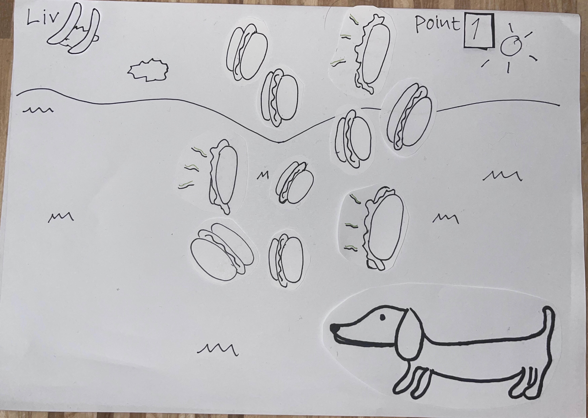
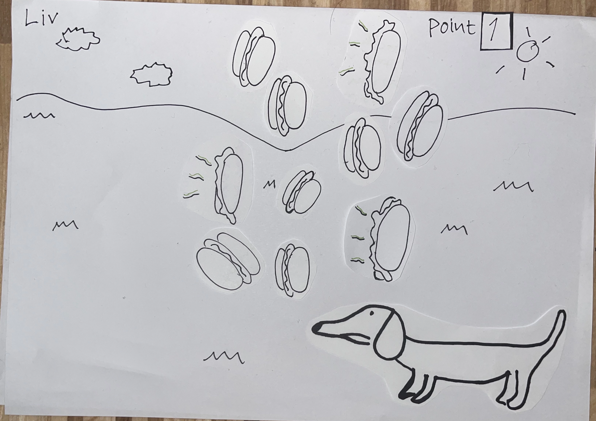
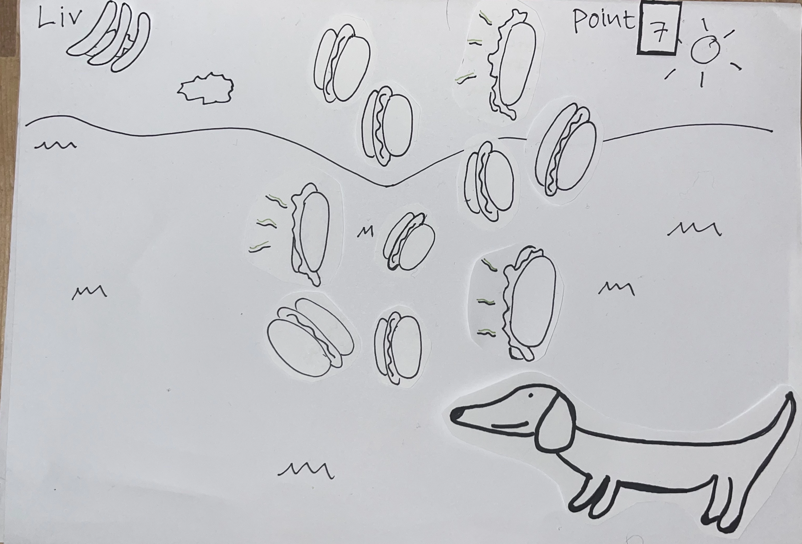
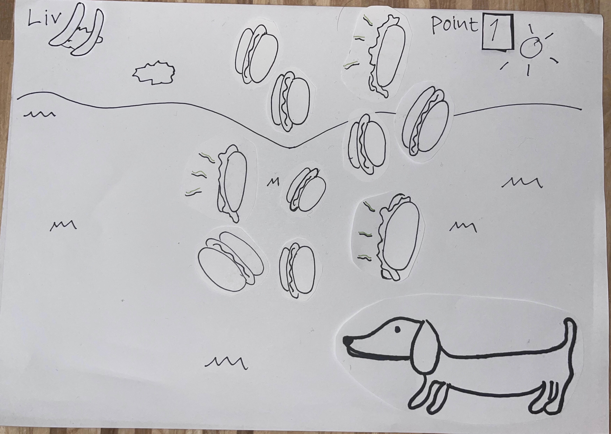
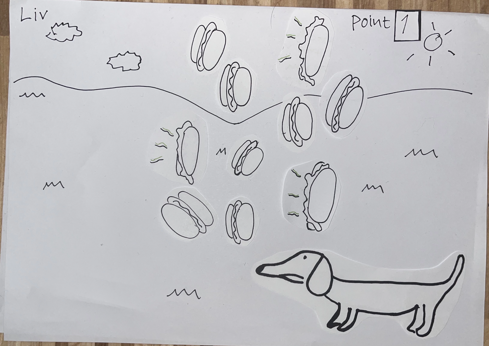
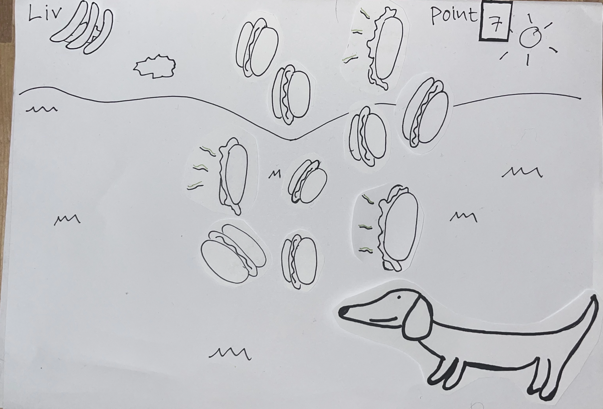

HUNGRY HOTDOG
TEMA 04
I dette tema blev vi introduceret til programmeringssproget JavaScript, som er en vigtig del af det moderne internet og bruges til at kode mere avancerede og dynamiske hjemmesider samt interaktive elementer som brugermenuer, slideshows, snap scroll osv. I dette tema brugte vi JavaScript sammen med css-animationer til at kode et spil. Her arbejdede vi selvstændigt og skulle selv bestemme konceptet og designe det ved hjælp af Adobe Illustrator.
GÅ TIL HJEMMESIDEN
HUNGRY HOTDOG
Mit spil hadler om en sulten weinerdog er et "click"spil, hvor man både kan klikke på gode og dårlige hotdogs. De gode og saftige hotdogs giver dig point, og de lortede hotdogs tager dine liv. Du har 20 sekunder til at hjælpe den sultne hotdog, og for at vinde spillet skal du klikke på 8 gode hotdogs, og du taber ved at klikke på 3 dårlige.
IDÉ OG STIL
Jeg er besat af weinerhunde, og jeg vil virkelig gerne have en selv, så ideen kom til mig, da jeg scrollede på tiktok og så en video af en lillebitte weinerhund. Og da navnet inkluderer en tissemand, syntes jeg, det var sjovt, at han skulle have hotdogs. Jeg valgte en flad visuel stil, fordi jeg godt kunne lide, hvordan grafikken så ud i spil, der var lavet i den stil.
PAPER PROTOTYPE
Her har vi min papirprototype af mit spil Hungry hotdog, hvor jeg demonstrerer, hvordan spillet fungerer, og som er mit første udkast til, hvordan grafikken ville se ud.
 





ELEMENTER
Jeg tegnede alle de elementer, jeg brugte, i Adobe Illustrator. Brugergrænsefladeelementerne er play-knapperne, de enkelte hotdogs, som er livet og timeglasset. Og spilelementerne er juicy- og poop-hotdogs..
ASSETS
Jeg tegnede også mine assets i Adobe Illustrator, hvor jeg lavede en start-, baggrunds-, level complete- og game over-skærm. Til startskærmen brugte jeg lysegul og lilla, som er komplementære farver, og den brune hund passer også godt til den gule farve.